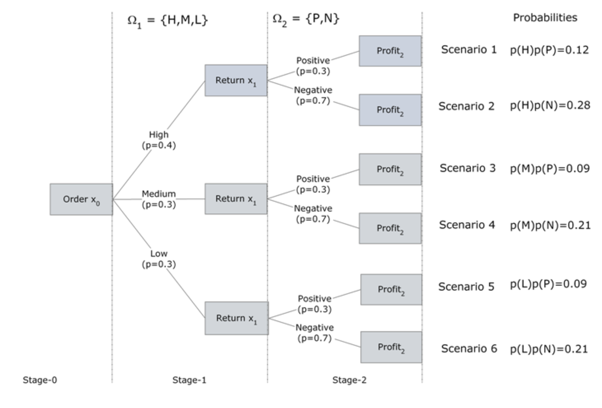

graph LR
A["Suppliers"] --> B["Factories"]
B --> C["Warehouses"]
C --> D["Retailers"]
Overview
This chapter is a collection of sequencing examples that are as close as possible to the CCDS, without all the details. The objecive is to prepare a library on which more realistic, and eventually forward-looking examples can be based. Our intention is not only to address today’s scheduling problems, but also to prepare the ground for scheduling challenges of the next 5 to 10 years, where data and compute volumes will increase by several orders of magnitude—outstanding examples are SKA and CERN’s FCC.
The chapter is divided into deterministic (D1 to D4) and stochastic (S1 to S3) scenarios. Realistic cases are presented in the Use-Cases chapter.
D1. Simplified Supply Chain Examples
Putting together:
- primal problem,
- dual problem,
- sensitivity analysis.
See Example D1 and Example D1a
These supply chain examples have the following structure.
%%{init: {'flowchart': {'curve': 'linear'}}}%%
flowchart LR
subgraph SUP["Suppliers"]
S1["$$S_1$$"]
S2["$$S_2$$"]
S3["$$S_3$$"]
end
subgraph FAC["Factories"]
F1["$$F_1$$"]
F2["$$F_2$$"]
F3["$$F_3$$"]
end
subgraph WAR["Warehouses"]
W1["$$W_1$$"]
W2["$$W_2$$"]
W3["$$W_3$$"]
end
subgraph RET["Retailers"]
R1["$$R_1$$"]
R2["$$R_2$$"]
R3["$$R_3$$"]
end
S1 --> F1
S1 --> F2
S1 --> F3
F1 --> W1
F1 --> W2
F1 --> W3
W1 --> R1
W1 --> R2
W1 --> R3
style SUP fill:#EEEDFE,stroke:#AFA9EC,color:#3C3489
style FAC fill:#E1F5EE,stroke:#5DCAA5,color:#085041
style WAR fill:#FAEEDA,stroke:#EF9F27,color:#633806
style RET fill:#FAECE7,stroke:#F0997B,color:#993C1D
classDef purple fill:#EEEDFE,stroke:#AFA9EC,color:#3C3489
classDef teal fill:#E1F5EE,stroke:#5DCAA5,color:#085041
classDef amber fill:#FAEEDA,stroke:#EF9F27,color:#633806
classDef coral fill:#FAECE7,stroke:#F0997B,color:#993C1D
class S1,S2,S3 purple
class F1,F2,F3 teal
class W1,W2,W3 amber
class R1,R2,R3 coral
graph LR
A["Instruments"] --> B["HPC centres"]
B --> C["Data centres"]
C --> D["End-users"]
Notice the perfect analogy with the CCDS. This enables easy transposition of supply chain examples to our contexts of interest.
D2. Simplified Scheduling Examples
The scheduling Example D2 covers a lot of ground. We study a classical scheduling problem, where we are given a set of jobs, their release times, their durations and their due times. The objective is to optimize the makespan, or total duration of all the jobs. We also introduce the total past due, or lateness/tardiness as an additional objective.
We study:
- empirical scheduling (LIFO, EDD, SPT);
- key performance indicators (KPI);
- single-machine and multiple-machine scheduling;
- disjunctive scheduling using Big-M and convex hull approaches.
D3. Simplified RCPSP Example
We are now in a position to add:
- resource constraints, and
- precedence relations described by a DAG
to the scheduling problems above. This problem is known as the Resource Constrained Project Scheduling Problem, or RCPSP.
The optimization is now more complex, since the resource constraints have to be simultaneously satisfied while minimizing the makespan, or any function of the makespan, while satisfying all precedences described by the Directed Acyclic Graph of the complete workflow.
In Example D3 we combine:
- resource constraints,
- precedence relations,
- time-indexed formulation,
- disjunctive approach.
The formulation is taken from Section Mathematical Formulation - Deterministic Model.
D4. MRCPSP Examples
The final extension is to add multiple modes, or machines, for the execution of each task in the workflow. In other words, there is an additional choice to be made between, say, a fast but expensive machine, and a slower but cheaper one. This is the connection between the resource schedule and the supply chain viewpoint that best characterizes cross-facility workflows in the CCDS context.
In this example we have 4 jobs, 2 possible modes, 1 renewable resource and no non-renewable resources. Jobs 2 and 3 can be executed in mode 1 or in mode 2.
graph LR
A["$$J_0$$"] --> B("$$J_1$$")
A --> C("$$J_2$$")
B --> D("$$J_3$$")
C --> E("$$J_4$$")
D --> F["$$J_5$$"]
E --> F
The project instance, shown above, is detailed in Table 1, where \(S_j\) is the successor list of job \(j,\) \(m\) is the mode, \(d_{jm}\) is the duration of job \(j\) in mode \(m,\) \(k^{\rho}_{jm1}\) is the renewable resource requirement, \(R^{\rho}\) is the renewable resource list, \(K^{\rho}\) is the renewable resource limit, and \(R^{\nu}\) is the non-renewable resource list, taken as empty. In other words we have 4 jobs, 2 possible modes, 1 renewable resource and no non-renewable resources. Jobs 2 and 3 can be executed in mode 1 or in mode 2. Jobs 0 and 5 are the source and sink respectively, with zero duration and zero resources.
\[\begin{aligned} & \text {Table 1. Multi-mode RCPSP for a 4-job, 2-mode workflow. }\\ &\begin{array}{cccccccc} %\begin{tabular}{|c|c|c|c|c|c|c|c|} \hline j & S_{j}& m & d_{jm} & k^{\rho}_{jm1} & R^{\rho} & K^{\rho}_{1} & R^{\nu}\\ \hline 0 & \left\{ 1,2\right\} & 1 & 0 & 0 & \left\{ 1\right\} & 3 & \emptyset \\ 1 & \left\{ 3\right\} & 1 & 2 & 2 & & & \\ 2 & \left\{ 4\right\} & 1 & 2 & 2 & & & \\ & & 2 & 3 & 1 & & & \\ 3 & \left\{ 5\right\} & 1 & 1 & 3 & & & \\ & & 2 & 2 & 1 & & & \\ 4 & \left\{ 5\right\} & 1 & 2 & 3 & & & \\ 5 & \emptyset & 1 & 0 & 0 & & & \\ \hline %\end{tabular} \end{array} \end{aligned}\]
Input File
The simplest input file is a direct transcription of the table of variables.
{
"0":{"suc":("1","2"),"mod":"A","drt":0, "rsc":0},
"1":{"suc":"3","mod":"A", "drt":2, "rsc":2},
"2":{"suc":"4","mod":("A","B"),"drt":[2,3],"rsc":[2, 1]},
"3":{"suc":"5","mod":("A","B"),"drt":[1,2],"rsc":[3, 1]},
"4":{"suc":"5","mod":"A", "drt":2, "rsc":3},
"5": {"suc":"","mod":"A", "drt":0, "rsc":0 }
}import json
with open("input.json", "r") as jsonfile:
TASKS = json.load(jsonfile)Though, for interoperability, we should privilege the data model format, described above in Section CCDS Implementation.
MRCPSP Benchmark using CPLEX
In Example I1 of the Implementation section, we solve a 30-task example with 3 modes, 2 renewable resources and 2 non-renewable resources. This is certainly a bit beyond actual CCDS use-cases, but illustrates the capability of good optimization codes to address far more complex workflows with relative ease.
Simplfied MRCPSP Example
In Example D4, we consider a scheduling problem with 5 tasks, 2 modes, 1 renewable resource, and 1 non-renewable resource. We use the time-indexed Pritsker formulation, and minimize the makespan. Note that we could consider a disjunctive (big-M) formulation, but since the problem size is small and easily solved, this is not necessary.
Here is the resulting schedule, in flowchart form.
flowchart LR
S(((Start)))
E(((End)))
T1["Task 1<br/>m=2, d=6"]
T2["Task 2<br/>m=2, d=2"]
T3["Task 3<br/>m=2, d=5"]
T4["Task 4<br/>m=2, d=2"]
T5["Task 5<br/>m=1, d=2"]
S --> T1
S --> T2
S --> T3
T1 --> T4
T2 --> T5
T3 --> T5
T4 --> E
T5 --> E
Stochastic Cases
Here we present a very complete range of pedagogical examples covering
- Single-Stage cases, based on expectations with comparison of EVM, EVSS and EVPI.
- Two-Stage cases, with recourse decisions.
- Multi-Stage cases.
These examples are based on the excellent presentations of Postek et al. (2025) and its associated website. We have tried to adapt these examples, as far as possible, to the CCDS context.
We recall the form of the objective function for each of the three cases.
- Single-stage: \[\min_x \mathbb{E}_z \left[ Q(x,z) \right],\] where \(x\) is the decision variable, and \(z\) is a random variable.
- Two-stage: \[\min_x c^{\top}x + \mathbb{E}_z \left[ Q(x,z) \right],\] where \(c\) is the deterministic cost.
- Multi-stage: \[\min_x c^{\top}x + \sum_{i=1}^S \mathbb{E}_z \left[ Q(x_i,z) \right],\] where \(S\) is the number of scenarios.
S0. Single-Stage Stochastic
Before embarking on two- and multi-stage cases, it is very instructive to study the context of a single stage, without a preceding deterministic stage as was presented in the theoretical section Stochastic, multistage programming. This context brings out the important concepts of the following scenarios (see Example S0a for the definitions): Expected Value for the Mean (EVM), Expected Value of the Stochastic Solution (EVSS), and Expected Value with Perfect Information (EVPI), where \[ \mathrm{EVM} \le \mathrm{EVSS} \le \mathrm{EVPI}. \] Based on these, there are two quantities that can then be used to fully appreciate the importance of different stochastic models, and their comparison with deterministic ones.
- Value of the stochastic solution \[\mathrm{VSS} = \mathrm{EVSS} - \mathrm{EVM}\]
- Value of perfect information \[\mathrm{VPI} = \mathrm{EVPI} - \mathrm{EVSS}\]
These two quantities give the motivation for stochastic programming. VPI measures the value of knowing the future with certainty, while VSS assesses the value of knowing and using distributions on future outcomes. Their values are useful metrics for deciding whether to undertake the additional efforts required by stochastic optimization.
The most basic way of accounting for randomness is to consider the average, or expected value, of a given uncertain quantity. For constraints, expectations are not useful, because protection against the average outcome generally produces a low level of protection. For that reason, we consider problems in which the expectation appears only in the objective, \[ \min_x \mathbb{E}_z \left[ f(x,z) \right], \tag{1}\] where \(x\) is the decision variable, and \(z\) is a random variable.
S0a. Single-Stage Newsvendor Problem
The newsvendor problem is a cornerstone of stochastic optimization and can be applied to many different contexts. We suppose that a product (e.g. newspapers) can be purchased for a given cost, \(c,\) but the sales at price \(r\) depend on some uncertain demand \(d_s,\) where \(s\) is a possible scenario, and finally there may be a salvage value \(w\) that is refunded for unsold items.
The problem is to determine how many items to purchase. The dilemma is that the scenario (say, weather) will not be known until after the order is placed. Ordering enough items to meet demand for a good scenario (weather) results in a financial penalty on returned goods if the scenario (weather) is poor. On the other hand, ordering just enough items to satisfy demand on a poor scenario (weather) leaves “money on the table” if the scenario (weather) is good.
In terms of the CCDS, we can reformulate the newsvendor as an optimal inventory problem, where we need to allocate server/storage capacity \(x\) to satisfy (uncertain) demand \(d\) with three associated costs:
- allocation cost \(c,\)
- back penalty (shortage) cost \(b,\)
- holding (surplus) cost \(h.\)
The objective here is to minimize the total cost, \[ G(x,d) = cx +b[d-x]_+ + h[x-d]_+ \] where \([\cdot]_+ \doteq \max(\cdot\, , 0).\)
Note, if \(d\) is considered to be a random variable, then we obtain the objective of Equation 1.
First, we will consider a single-stage formulation, which will be generalized below to a two-stage case.
In Example S0a we consider a discrete distribution for the sales (demand), which depends on three scenarios, each with an associated probability that has been estimated from past experience, or from archived (log) data.
S0b. Stock Optimization for a Distribution Center
This is another example of an inventory optimization (newsvendor) problem, where we want to buy an optimal quantity of stock, in this case servers or storage capacities, to cover an uncertain (future) demand.
In Example S0b we compare three different, continuous distributions for the demand (sales). This problem has an explicit solution in terms of the given probability distribution functions. We compare this solution with a detreministic, average demand solution, and then with an SAA approximation of each distribution. This enables us to compute the VSS.
In terms of the CCDS, we could convert this to “Allocation Optimization for a Data or Compute Center”.
S1. Two-Stage Stochastic
Recall the formulation of the two-stage stochastic program (2SP), \[ \min_{\mathbf{x}} \mathbf{c}^{\top} \mathbf{x} + \mathbb{E}_{\mathbf{\xi}} \left[ Q(\mathbf{x},\mathbf{\xi}) \right], \quad \mathbf{x} \in \mathcal{X}, \] where
- \(\mathbf{c} \in \mathbb{R}^n\) is the first-stage cost vector,
- \(\mathbf{x} \in \mathbb{R}^n\) is the first-stage decision vector,
- \(\mathbf{\xi}\) is the vector of random parameters, following a probability distribution (discrete or continuous) \(\mathbb{P}\) with support \(\Xi,\)
- the value function \(Q \colon \mathcal{X} \times \Xi \rightarrow \mathbb{R}\) returns the cost of optimal second-stage (recourse) decisions under realization \(\mathbf{\xi}\) given the first-stage decisions of \(\mathbf{x}.\)
In many cases, since \(Q(\mathbf{x},\mathbf{\xi})\) is obtained by solving a MIP, evaluating the expected value function \(\mathbb{E}_{\mathbf{\xi}} \left[ Q(\mathbf{x},\mathbf{\xi}) \right]\) is theoretically intractable, since it requires exhaustive (infinite) sampling. To obtain a more tractable formulation, the extensive form (EF) is used. We use a set of \(S\) scenarios, \(\mathbf{\xi}_1, \ldots, \mathbf{\xi}_S,\) sampled from the probability distribution \(\mathbb{P},\) to obtain \[ \mathrm{EF}(\mathbf{\xi}_1, \ldots, \mathbf{\xi}_S) = \min_{\mathbf{x}} \mathbf{c}^{\top} \mathbf{x} + \sum_{s=1}^{S} p_s Q(\mathbf{x},\mathbf{\xi}_s), \quad \mathbf{x} \in \mathcal{X}, \] where \(p_s\) is the probability of scenario \(\mathbf{\xi}_s\) being realized. If the recourse value function \[ Q(\mathbf{x},\mathbf{\xi}) = \min_{\mathbf{y}} F(\mathbf{y},\mathbf{\xi}), \quad \mathbf{y} \in \mathcal{Y}, \] then \(\mathrm{EF}(\mathbf{\xi}_1, \ldots, \mathbf{\xi}_S)\) can be written as a deterministic optimization problem, \[ \min_{\mathbf{x},\mathbf{y}} \mathbf{c}^{\top} \mathbf{x} + \sum_{s=1}^{S} p_s F(\mathbf{y}_s,\mathbf{\xi}_s), \quad \mathbf{x} \in \mathcal{X}, \; \mathbf{y} \in \mathcal{Y(\mathbf{x},\mathbf{\xi}_s)}, \; \forall s=1,\ldots, S. \]
The computational complexity of this problem grows linearly with the number of scenarios, which itself grows exponentially. As a result, the EF model is more challenging to solve when compared to a standard LP case, in particular at large scale. However, the cases encountered below in the examples, and in the CCDS, remain relatively small, and thus tractable.
SAA
In Example S1a we use the statistical average approximation (SAA) to sample from continuous distributions in a 2-stage stochastic optimization for the design or allocation of computing resources. This is another example of an inventory optimization (newsvendor) problem, where we want to invest in an optimal number of resources, to cover an uncertain (future) demand.
Scenario Tree
When the probability distributions for the random parameters (events) are discrete, there are only a finite number of outcomes in each stage. With each random parameter fixed to one of its possible outcomes, one can create a scenario representing one possible realization of the future. Enumeration of all possible combinations of outcomes allows us to represent all scenarios in a tree, with each scenario being a path from the root of the tree to one of its leaves. The nodes visited by each path correspond to values assumed by random parameters in the model.
A simple, 2-stage case is studied in the second half of Example S1a.
S2. Multi-Stage Stochastic
We illustrate the construction of a multi-stage scenario tree with another stochastic version of the Newsvendor inventory problem. In this case, we must decide how much to order initially and then at a later time, how much of any unsold product to return before the end of the planning horizon. There is a shortage penalty when there are lost sales and a carrying cost for leftover (unsold) units. The decision process takes place under uncertain demand and uncertain price per returned item. This is a three-stage. problem.
- In stage 0, the order quantity has to be decided (under uncertain demand).
- In stage 1, at the beginning, the demand is revealed. A recourse decision, at the end of stage 1, is the number of units to be returned to the publisher (for an uncertain refund price).
- In stage 2 at the beginning, the refund price is announced by the publisher. The price per returned item can be either:
- Positive (i.e. publisher accepts them at a high price which covers the cost of shipping and handling) or
- Negative (i.e. publisher accepts them at a low price which doesn’t cover the cost of shipping and handling).
- The objective is to maximize the total expected profit at the end of planning horizon (stage 2).

Multi-Stage for Genomics Workflow
We now consider a slightly simplified, but nonetheless realistic example of a genomics workflow. Suppose that we have four jobs to perform:
- preprocessing (\(J_1\)),
- alignment (\(J_2\)),
- variant calling (\(J_3\)), and
- annotation (\(J_4\)).
These have the follwing DAG structure:
flowchart LR
T1["Job 1<br/>Preproc"]
T2["Job 2<br/>Alignment"]
T3["Job 3<br/>Variant"]
T4["Job 4<br/>Annotation"]
T1 --> T2
T2 --> T3
T2 --> T4
There are (at least) two ways of addressing this problem.
- As a resource allocation problem, with uncertainty.
- As a Markov chain, where availability of resources at stage \(t+1\) depends on stage \(t.\)
In both cases, we end up with a stochastic recourse problem, expressed in extensive form based on all possible scenarios—supposing that we have a discrete probability description of the workflow.
The uncertainty concerns the availability of the compute facilities. This can be readily generalized to cover data center availability, or reliability. For this, we only need to add a term to the objective function, and an additonal availability constraint.
This notebook describes the Markov chain context.
S3. Risk Measures
As presented in the Risk Measures section, there are various ways to include risk in the cost function. In Example S3, we analyze a stochastic energy dispatch problem, and compare the following risk measures:
- mean,
- CVaR,
- mean-variance,
- exponential.